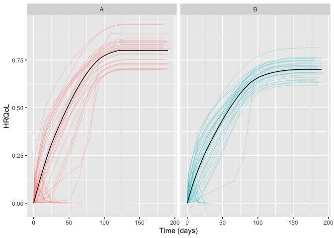
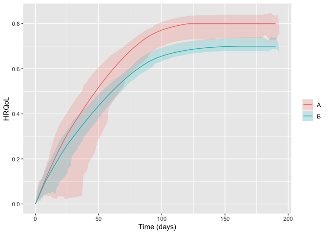

Package for simulating randomised clinical trials with temporal trajectories of health-related quality of life (HRQoL) as the outcome, to quantify effect sizes as single-sampled HRQoL values at end of follow-up and as the area under the trajectories.
Developed as part of the INCEPT (Intensive Care Platform Trial) project (https://incept.dk/), which is primarily supported by a grant from Sygeforsikringen “danmark” (https://www.sygeforsikring.dk/).
Resources
- Website - stand-alone website with full package documentation
-
Health-related quality of life trajectories in critical illness: protocol for a Monte Carlo simulation study - protocol article in Acta Anaesthesiologica Scandinavica outlining the first scientific study to use
hrqolr
Getting started
First, load the package:
library(hrqolr)
#> Loading 'hrqolr' package v0.0.0.9051.
#> For help, run 'help("hrqolr")' or check out https://inceptdk.github.io/hrqolr.The preferred way to design a scenario is by using the setup_scenario() function to validate the input and give it the right format. Set verbose = FALSE to silence the validation results.
scenario <- setup_scenario(
arms = c("A", "B"),
n_patients = 100,
sampling_frequency = 14,
index_hrqol = 0.0,
first_hrqol = 0.1,
final_hrqol = c(A = 0.8, B = 0.7),
acceleration_hrqol = c(A = 1.1, B = 1.0),
mortality = 0.4,
mortality_dampening = 0.0,
mortality_trajectory_shape = "exp_decay",
prop_mortality_benefitters = 0.0
)
#> Scenario-parameter validation:
#> - arms valid as is c("A", "B")
#> - n_patients expanded to c(A = 100, B = 100)
#> - index_hrqol expanded to c(A = 0, B = 0)
#> - first_hrqol expanded to c(A = 0.1, B = 0.1)
#> - final_hrqol valid as is c(A = 0.8, B = 0.7)
#> - acceleration_hrqol valid as is c(A = 1.1, B = 1)
#> - mortality expanded to c(A = 0.4, B = 0.4)
#> - mortality_dampening expanded to c(A = 0, B = 0)
#> - mortality_trajectory_shape expanded to c(A = "exp_decay", B = "exp_decay")
#> - prop_mortality_benefitters expanded to c(A = 0, B = 0)
#> - sampling_frequency expanded to c(A = 14, B = 14)Getting an overview of the final scenario:
scenario
#> - arms A B
#> - n_patients 100 100
#> - index_hrqol 0 0
#> - first_hrqol 0.1 0.1
#> - final_hrqol 0.8 0.7
#> - acceleration_hrqol 1.1 1
#> - mortality 0.4 0.4
#> - mortality_dampening 0 0
#> - mortality_trajectory_shape exp_decay exp_decay
#> - prop_mortality_benefitters 0 0
#> - sampling_frequency 14 14With the scenario at hand, we can sample a number of example trajectories and visualise them:
example_trajs <- sample_example_trajectories(scenario, n_digits = 3)
plot(example_trajs)
sample_example_trajectories returns a ggplot object, allowing you to fine-tune its appearance for your needs. For example, breaking apart the trajectories in the arms apart with facets and hide the legend (remember to load ggplot2 first). Here, we also set the arm-level trajectory in black to make it stand out better:
library(ggplot2)
plot(example_trajs, arm_aes = list(colour = "black")) +
facet_wrap(~ arm) +
theme(legend.position = "none")
You can also summarise the trajectories, e.g., with inter-quartile ranges. The ribbons become a bit wonky at end of follow-up due to increasingly fewer observations some of which might be low:

The same scenario specification can, then, be used to simulate a desired number of trials. By default hrqolr will print progress updates to the console (silence these with verbose = FALSE):
sims <- simulate_trials(scenario)
#> 2024-06-02 17:28:51: Estimating ground truth of arm 'A' (0 secs)
#> 2024-06-02 17:28:51: Starting arm 'A' (0.4 secs)
#> 2024-06-02 17:28:52: Estimating ground truth of arm 'B' (1.39 secs)
#> 2024-06-02 17:28:53: Starting arm 'B' (1.74 secs)
#> 2024-06-02 17:28:54: Aggregating results (2.78 secs)
#> 2024-06-02 17:28:54: Finished (2.99 secs)
#> 2024-06-02 17:28:54: Sampling example trajectories (3.13 secs)
#> 2024-06-02 17:28:54: Wrapping up, returning output (3.36 secs)Just printing the returned object gives an overview:
sims
#> # Scenario specification
#> - arms A B
#> - n_patients 100 100
#> - index_hrqol 0 0
#> - first_hrqol 0.1 0.1
#> - final_hrqol 0.8 0.7
#> - acceleration_hrqol 1.1 1
#> - mortality 0.4 0.4
#> - mortality_dampening 0 0
#> - mortality_trajectory_shape exp_decay exp_decay
#> - prop_mortality_benefitters 0 0
#> - sampling_frequency 14 14
#>
#> # Simulation metadata
#> - No. simulated trials 100
#> - Max. no. patients per batch NULL
#> - No. ground-truth samples 1,000
#> - Valid range of HRQoL [-0.757, 1.000]
#> - Significance level (alpha) 0.05
#> - Test function welch_t_test
#> - Seed NULL
#> - Elapsed time 3.4 secs
#> - Peak memory use 195 MB
#>
#> # Comparisons between arms (all patients) and select performance metrics
#> primary__hrqol_at_eof primary__hrqol_auc
#> <char> <char> <char>
#> Comparator arm A A
#> Target arm B B
#> Mean difference -0.055 -7.571
#> Std. error of mean diff. 0.005 0.736
#> Relative bias -0.046 -0.008
#> Rejection proportion 0.17 0.15
#> Coverage 0.94 0.95
#>
#> # Summary statistics
#> ## All participants
#> outcome arm p25 p50 p75 mean sd se
#> <char> <char> <num> <num> <num> <num> <num> <num>
#> primary__hrqol_at_eof A 0.448 0.474 0.504 0.476 0.040 0.004
#> primary__hrqol_at_eof B 0.398 0.423 0.443 0.421 0.033 0.003
#> primary__hrqol_auc A 64.367 68.122 71.961 68.295 5.707 0.571
#> primary__hrqol_auc B 57.468 60.828 64.142 60.724 4.714 0.471
#> secondary1__hrqol_at_eof A 0.448 0.474 0.504 0.477 0.039 0.004
#> secondary1__hrqol_at_eof B 0.398 0.423 0.443 0.421 0.033 0.003
#> secondary1__hrqol_auc A 64.107 68.048 71.888 68.155 5.691 0.569
#> secondary1__hrqol_auc B 57.195 60.691 63.891 60.498 4.729 0.473
#> secondary2__hrqol_at_eof A 0.448 0.474 0.504 0.477 0.039 0.004
#> secondary2__hrqol_at_eof B 0.398 0.423 0.443 0.421 0.033 0.003
#> secondary2__hrqol_auc A 60.384 63.871 67.890 64.166 5.341 0.534
#> secondary2__hrqol_auc B 53.484 56.953 59.913 56.763 4.430 0.443
#>
#> ## Survivors
#> outcome arm p25 p50 p75 mean sd se
#> <char> <char> <num> <num> <num> <num> <num> <num>
#> primary__hrqol_at_eof A 0.558 0.580 0.612 0.582 0.040 0.004
#> primary__hrqol_at_eof B 0.484 0.509 0.524 0.508 0.032 0.003
#> primary__hrqol_auc A 80.209 82.936 87.832 83.460 5.879 0.588
#> primary__hrqol_auc B 69.555 73.145 75.850 73.248 4.593 0.459
#> secondary1__hrqol_at_eof A 0.650 0.674 0.697 0.674 0.036 0.004
#> secondary1__hrqol_at_eof B 0.572 0.588 0.606 0.589 0.028 0.003
#> secondary1__hrqol_auc A 93.299 96.414 99.438 96.473 5.342 0.534
#> secondary1__hrqol_auc B 81.354 84.834 87.068 84.608 4.027 0.403
#> secondary2__hrqol_at_eof A 0.741 0.760 0.777 0.758 0.024 0.002
#> secondary2__hrqol_at_eof B 0.652 0.664 0.677 0.663 0.020 0.002
#> secondary2__hrqol_auc A 99.867 102.464 104.385 102.021 3.320 0.332
#> secondary2__hrqol_auc B 87.787 89.541 91.370 89.385 2.817 0.282The returned object contains quite a lot of interesting information. For example, summary statistics by arm:
sims$summary_stats
#> outcome arm analysis p25 p50 p75 mean sd se
#> <char> <char> <fctr> <num> <num> <num> <num> <num> <num>
#> 1: primary__hrqol_at_eof A all 0.448 0.474 0.504 0.476 0.040 0.004
#> 2: primary__hrqol_at_eof B all 0.398 0.423 0.443 0.421 0.033 0.003
#> 3: primary__hrqol_auc A all 64.367 68.122 71.961 68.295 5.707 0.571
#> 4: primary__hrqol_auc B all 57.468 60.828 64.142 60.724 4.714 0.471
#> 5: secondary1__hrqol_at_eof A all 0.448 0.474 0.504 0.477 0.039 0.004
#> 6: secondary1__hrqol_at_eof B all 0.398 0.423 0.443 0.421 0.033 0.003
#> 7: secondary1__hrqol_auc A all 64.107 68.048 71.888 68.155 5.691 0.569
#> 8: secondary1__hrqol_auc B all 57.195 60.691 63.891 60.498 4.729 0.473
#> 9: secondary2__hrqol_at_eof A all 0.448 0.474 0.504 0.477 0.039 0.004
#> 10: secondary2__hrqol_at_eof B all 0.398 0.423 0.443 0.421 0.033 0.003
#> 11: secondary2__hrqol_auc A all 60.384 63.871 67.890 64.166 5.341 0.534
#> 12: secondary2__hrqol_auc B all 53.484 56.953 59.913 56.763 4.430 0.443
#> 13: primary__hrqol_at_eof A survivors 0.558 0.580 0.612 0.582 0.040 0.004
#> 14: primary__hrqol_at_eof B survivors 0.484 0.509 0.524 0.508 0.032 0.003
#> 15: primary__hrqol_auc A survivors 80.209 82.936 87.832 83.460 5.879 0.588
#> 16: primary__hrqol_auc B survivors 69.555 73.145 75.850 73.248 4.593 0.459
#> 17: secondary1__hrqol_at_eof A survivors 0.650 0.674 0.697 0.674 0.036 0.004
#> 18: secondary1__hrqol_at_eof B survivors 0.572 0.588 0.606 0.589 0.028 0.003
#> 19: secondary1__hrqol_auc A survivors 93.299 96.414 99.438 96.473 5.342 0.534
#> 20: secondary1__hrqol_auc B survivors 81.354 84.834 87.068 84.608 4.027 0.403
#> 21: secondary2__hrqol_at_eof A survivors 0.741 0.760 0.777 0.758 0.024 0.002
#> 22: secondary2__hrqol_at_eof B survivors 0.652 0.664 0.677 0.663 0.020 0.002
#> 23: secondary2__hrqol_auc A survivors 99.867 102.464 104.385 102.021 3.320 0.332
#> 24: secondary2__hrqol_auc B survivors 87.787 89.541 91.370 89.385 2.817 0.282
#> outcome arm analysis p25 p50 p75 mean sd se–and head-to-head comparisons between the arms:
sims$comparisons
#> statistic primary__hrqol_at_eof primary__hrqol_at_eof primary__hrqol_auc primary__hrqol_auc secondary1__hrqol_at_eof secondary1__hrqol_at_eof secondary1__hrqol_auc secondary1__hrqol_auc secondary2__hrqol_at_eof secondary2__hrqol_at_eof secondary2__hrqol_auc secondary2__hrqol_auc
#> <char> <char> <char> <char> <char> <char> <char> <char> <char> <char> <char> <char> <char>
#> 1: comparator A A A A A A A A A A A A
#> 2: target B B B B B B B B B B B B
#> 3: analysis all survivors all survivors all survivors all survivors all survivors all survivors
#> 4: mean_estimate -0.055 -0.074 -7.571 -10.212 -0.056 -0.086 -7.657 -11.866 -0.056 -0.095 -7.403 -12.636
#> 5: mean_ground_truth -0.058 -0.058 -7.633 -7.633 -0.058 -0.058 -7.795 -7.795 -0.058 -0.058 -7.801 -7.801
#> 6: sd 0.051 0.053 7.357 7.617 0.051 0.043 7.366 6.345 0.051 0.032 6.897 4.346
#> 7: se 0.005 0.005 0.736 0.762 0.005 0.004 0.737 0.635 0.005 0.003 0.69 0.435
#> 8: bias 0.003 -0.016 0.062 -2.579 0.003 -0.028 0.138 -4.071 0.003 -0.037 0.398 -4.835
#> 9: bias_se 0.005 0.005 0.736 0.762 0.005 0.004 0.737 0.635 0.005 0.003 0.69 0.435
#> 10: relative_bias -0.046 0.279 -0.008 0.338 -0.045 0.474 -0.018 0.522 -0.045 0.629 -0.051 0.62
#> 11: relative_bias_se 0.088 0.09 0.096 0.1 0.088 0.074 0.094 0.081 0.088 0.054 0.088 0.056
#> 12: mse 0.003 0.003 53.588 64.086 0.003 0.003 53.728 56.432 0.003 0.002 47.249 42.073
#> 13: mse_se 0 0 7.672 8.952 0 0 7.647 7.59 0 0 6.596 4.689
#> 14: coverage 0.94 0.94 0.95 0.93 0.94 0.91 0.94 0.9 0.94 0.76 0.94 0.77
#> 15: coverage_se 0.024 0.024 0.022 0.026 0.024 0.029 0.024 0.03 0.024 0.043 0.024 0.042
#> 16: bias_corrected_coverage 1 1 1 1 1 1 1 1 1 1 1 1
#> 17: bias_corrected_coverage_se 0 0 0 0 0 0 0 0 0 0 0 0
#> 18: rejection_proportion 0.17 0.27 0.15 0.27 0.17 0.42 0.15 0.4 0.17 0.79 0.16 0.79
#> 19: rejection_proportion_se 0.038 0.044 0.036 0.044 0.038 0.049 0.036 0.049 0.038 0.041 0.037 0.041
#> 20: n_sim 100 100 100 100 100 100 100 100 100 100 100 100
#> 21: p25 -0.091 -0.104 -12.485 -15.08 -0.091 -0.12 -12.59 -17.017 -0.091 -0.118 -12.216 -15.627
#> 22: p50 -0.061 -0.078 -8.664 -10.964 -0.061 -0.083 -8.904 -11.358 -0.061 -0.095 -8.336 -12.696
#> 23: p75 -0.026 -0.038 -3.246 -4.941 -0.026 -0.053 -3.486 -7.002 -0.026 -0.071 -3.654 -9.537
#> statistic primary__hrqol_at_eof primary__hrqol_at_eof primary__hrqol_auc primary__hrqol_auc secondary1__hrqol_at_eof secondary1__hrqol_at_eof secondary1__hrqol_auc secondary1__hrqol_auc secondary2__hrqol_at_eof secondary2__hrqol_at_eof secondary2__hrqol_auc secondary2__hrqol_aucInstallation
hrqolr isn’t on CRAN yet but can be installed from GitHub if you have the remotes package installed:
# install.packages("remotes")
remotes::install_github("INCEPTdk/hrqolr")You can also install the development version from directly from GitHub. Doing this requires the remotes package installed. The development version may contain additional features not yet available in the stable CRAN version, but may be unstable or lack documentation.
remotes::install_github("INCEPTdk/hrqolr@dev")Issues and enhancements
We use the GitHub issue tracker for all bug/issue reports and proposals for enhancements.
Contributing
We welcome contributions directly to the code to improve performance as well as new functionality. For the latter, please first explain and motivate it in an issue.
Changes to the code base should follow these steps:
- Fork the repository
- Make a branch with an appropriate name in your fork
- Implement changes in your fork, make sure it passes R CMD check (with neither errors, warnings, nor notes) and add a bullet at the top of NEWS.md with a short description of the change, your GitHub handle and the id of the pull request implementing the change (check the
NEWS.mdfile to see the formatting) - Create a pull request into the
devbranch ofadaptr
Citation
If using hrqolr, please consider citing it:
citation(package = "hrqolr")
#> To cite package 'hrqolr' in publications use:
#>
#> Kaas-Hansen BS, Granholm A (2023). hrqolr: an R package for
#> simulating health-related quality of life trajectories.
#> https://inceptdk.github.io/hrqolr/
#>
#> A BibTeX entry for LaTeX users is
#>
#> @Manual{,
#> title = {{hrqolr}: an R package for simulating health-related quality of life trajectories},
#> author = {Benjamin Skov Kaas-Hansen and Anders Granholm},
#> year = {2023},
#> url = {https://inceptdk.github.io/hrqolr/},
#> }